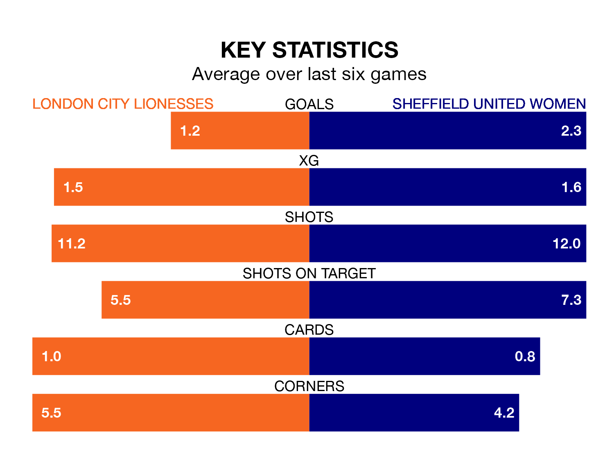

London City Lionesses and Sheffield United Women both come into Sunday's early game at Princes Park on the back of winning runs in the FA Women's Championship.
The two sides have each won their last three matches, and the Lionesses have collected 10 points from their last six games, while Sheffield United have taken 12.
In Isobel Goodwin, Sheffield United have the league's most on-form striker so far this season. She has notched 14 goals in 18 appearances.
Her goal rate of one every 110 minutes is quicker than that of Chantelle Boye-Hlorkah, London City's top scorer with a goal every 216 minutes, and a total of five goals in 15 games.
With 21 goals in 19 games so far this season, the Lionesses are scoring at below the league average rate with 1.1 goals per game. And they are conceding more than average, letting in 29 goals at a rate of 1.5 per game.
The Blades, meanwhile, are above average scorers, with 1.5 goals per game, compared to a league average of 1.4. They have conceded 1.4 goals per game.
In the last 10 years, London City and Sheffield United have played each other on 10 occasions. London City won two of them, Sheffield United six, and they drew twice.
On average, the Lionesses scored 0.9 goals and the Blades 2.0 in those matches.
Their last meeting was on October 7, when Sheffield United won 3-1 at home.
The hosts are eighth in the table after 19 games, of which they have won six and drawn four, earning 22 points.
The away team are two places ahead of London City in sixth, with eight wins and two draws putting them on 26 points.
London City's last match was on Sunday, a 2-1 win against Charlton Athletic Women, with Boye-Hlorkah and Lotta Lindström getting the goals for the Lionesses.
Sheffield United beat Reading Women 5-1 last time out, also on Sunday, with Goodwin (two), Jessica Stapleton (own goal), Rebecca Raynor and Tara Bourne on the scoresheet.
Updated: 12:39 (UTC), 26/03/24